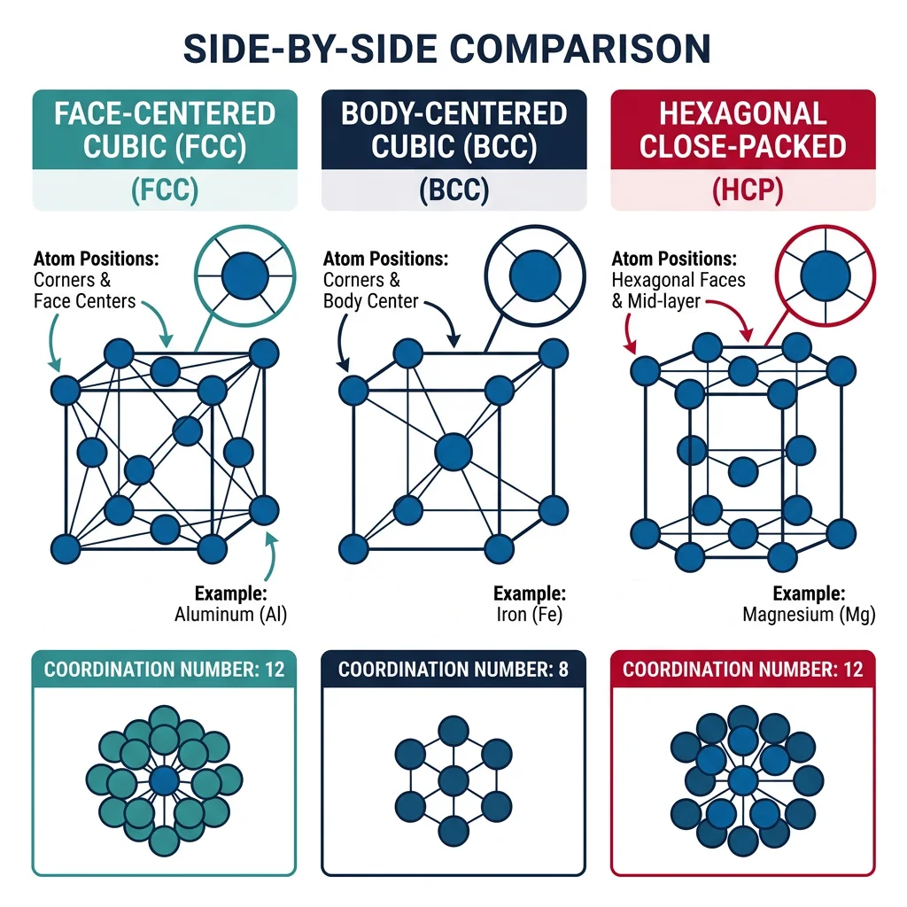
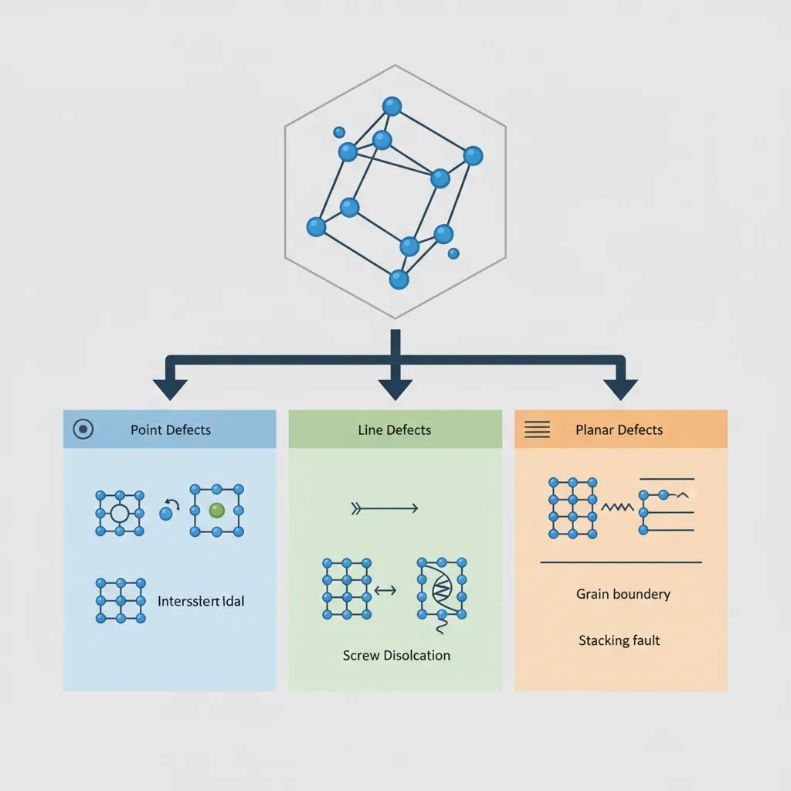
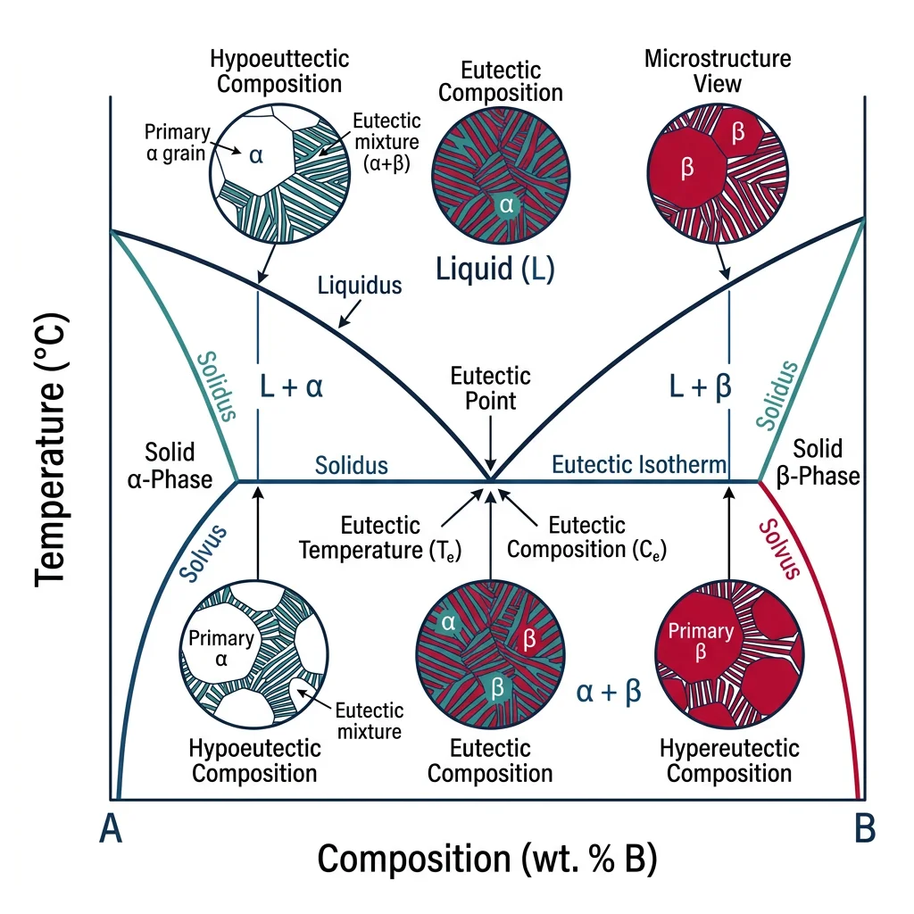
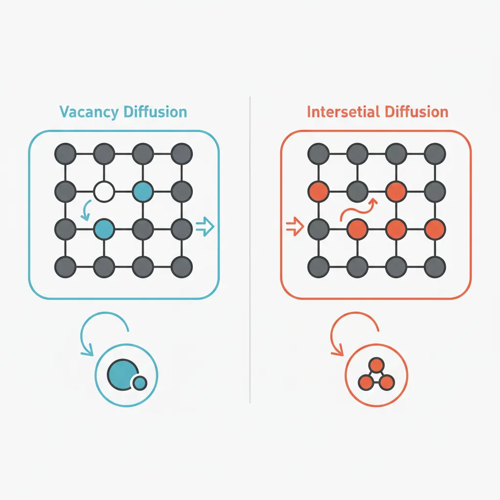
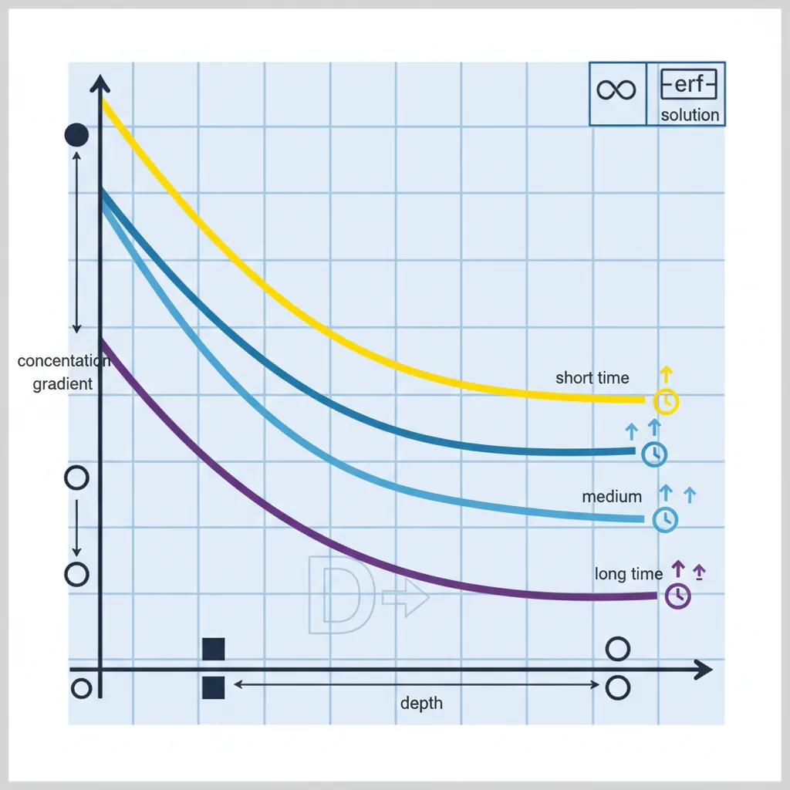

Crystal Structures & Crystallography
Materials Science Mastery
Atomic Structure & Quantum Foundations
Quantum mechanics, bonding, band theory, Fermi energy, phononsCrystal Structures, Defects & Diffusion
FCC/BCC/HCP, Miller indices, dislocations, phase diagrams, Fick's lawsMetals & Alloys
Iron-carbon diagram, steels, aluminum, titanium, superalloys, heat treatmentPolymers & Soft Materials
Polymer chemistry, thermoplastics, viscoelasticity, rheology, biopolymersCeramics, Glass & Composites
Oxide ceramics, toughening, fiber-reinforced composites, interfacial bondingMechanical Behavior & Testing
Stress-strain, hardness, fatigue, fracture toughness, nanoindentationFailure Analysis & Reliability Engineering
Fractography, corrosion, tribology, root cause analysisNanomaterials & Smart Materials
Nanotubes, graphene, piezoelectrics, shape memory alloys, self-healingMaterials Characterization Techniques
XRD, SEM, TEM, AFM, DSC, TGA, spectroscopyThermodynamics & Kinetics of Materials
Gibbs free energy, CALPHAD, phase stability, solidificationElectronic, Magnetic & Optical Materials
Semiconductors, photovoltaics, dielectrics, superconductorsBiomaterials
Implants, biocompatibility, tissue engineering, drug deliveryEnergy Materials
Battery materials, hydrogen storage, fuel cells, nuclear materialsComputational Materials Science
DFT, molecular dynamics, FEM, materials informatics, AIIf the atomic scale (Part 1) is the alphabet of materials science, then crystal structure is the grammar — the rules for how atoms arrange themselves into ordered patterns that determine mechanical strength, electrical conductivity, and thermal behavior. The vast majority of engineering metals, ceramics, and semiconductors are crystalline: their atoms are arranged in a periodic, repeating pattern that extends in three dimensions.

Analogy — The Tile Floor: Imagine tiling a floor. You can use squares, hexagons, or triangles — each shape tiles the plane differently, leaving different amounts of empty space. Atoms do the same thing in 3D: they "tile" space in different crystal structures, and the choice of tiling determines the material's properties.
- FCC (Face-Centered Cubic): Atoms at corners + face centers. APF = 0.74 (most efficient). 12 slip systems → highly ductile. Examples: Cu, Al, Au, Ag, Ni, Pb, stainless steels
- BCC (Body-Centered Cubic): Atoms at corners + body center. APF = 0.68. 48 potential slip systems but higher stress needed → moderate ductility. Examples: Fe (α), W, Cr, Mo, V
- HCP (Hexagonal Close-Packed): Hexagonal layers with ABAB stacking. APF = 0.74. Limited slip systems (3 primary) → often brittle/hard to form. Examples: Ti, Zn, Mg, Co, Zr
Case Study: Why Aluminum Cans Are Easy to Form but Titanium Is Not
Aluminum (FCC) has 12 independent slip systems — planes where atoms can slide past each other under stress. This abundance of slip systems means aluminum can deform in many directions without cracking, which is why beverage cans are deep-drawn from flat aluminum sheets in a single operation. Titanium (HCP) has only 3 primary slip systems (the basal planes), making it much harder to deform at room temperature. This is why titanium components are often forged at elevated temperatures (above 882°C, where Ti transforms to BCC β-phase with more slip systems) or machined from solid blocks — adding significant cost.
import numpy as np
# Crystal structure comparison calculator
structures = {
'Simple Cubic': {
'atoms_per_cell': 1,
'coordination': 6,
'APF': np.pi / 6, # 0.524
'relation': 'a = 2r',
},
'BCC': {
'atoms_per_cell': 2,
'coordination': 8,
'APF': np.pi * np.sqrt(3) / 8, # 0.680
'relation': 'a = 4r/√3',
},
'FCC': {
'atoms_per_cell': 4,
'coordination': 12,
'APF': np.pi * np.sqrt(2) / 6, # 0.740
'relation': 'a = 2√2·r',
},
'HCP': {
'atoms_per_cell': 6,
'coordination': 12,
'APF': np.pi * np.sqrt(2) / 6, # 0.740
'relation': 'a = 2r, c = 1.633a (ideal)',
},
}
print(f"{'Structure':<16s} {'Atoms/cell':<12s} {'CN':<6s} {'APF':<8s} {'Lattice relation'}")
print("=" * 65)
for name, props in structures.items():
print(f"{name:<16s} {props['atoms_per_cell']:<12d} {props['coordination']:<6d} "
f"{props['APF']:.3f} {props['relation']}")
Packing Factor & Unit Cells
The Atomic Packing Factor (APF) measures how efficiently atoms fill space — the ratio of total atom volume in a unit cell to the cell's volume. Higher APF generally means higher density, higher elastic modulus, and different deformation behavior.
- Atoms per unit cell: 8 corners × (1/8) + 6 faces × (1/2) = 4 atoms
- Atoms touch along the face diagonal: $4r = a\sqrt{2}$, so $a = 2\sqrt{2}r$
- APF = $\frac{4 \times \frac{4}{3}\pi r^3}{(2\sqrt{2}r)^3} = \frac{\pi}{3\sqrt{2}} \approx 0.740$
This 74% fill rate is the theoretical maximum for identical sphere packing.
import numpy as np
# Calculate theoretical density from crystal structure
def calculate_density(n_atoms, atomic_mass_amu, lattice_param_nm):
"""Calculate theoretical density in g/cm³."""
Na = 6.022e23
a_cm = lattice_param_nm * 1e-7
mass_per_cell = n_atoms * atomic_mass_amu / Na
volume = a_cm**3
return mass_per_cell / volume
metals = {
'Copper (FCC)': {'n': 4, 'M': 63.55, 'a': 0.3615, 'measured': 8.96},
'Iron-α (BCC)': {'n': 2, 'M': 55.85, 'a': 0.2866, 'measured': 7.87},
'Aluminum (FCC)': {'n': 4, 'M': 26.98, 'a': 0.4049, 'measured': 2.70},
'Tungsten (BCC)': {'n': 2, 'M': 183.84,'a': 0.3165, 'measured': 19.3},
}
print(f"{'Metal':<20s} {'Calculated ρ':<14s} {'Measured ρ':<12s} {'Error %'}")
print("=" * 55)
for name, props in metals.items():
rho_calc = calculate_density(props['n'], props['M'], props['a'])
error = abs(rho_calc - props['measured']) / props['measured'] * 100
print(f"{name:<20s} {rho_calc:<14.2f} {props['measured']:<12.2f} {error:.1f}%")
Miller Indices & Slip Systems
Miller indices provide standardized notation for describing directions and planes in crystal lattices. They are essential for understanding how crystals deform, where X-ray diffraction peaks appear, and how to specify crystal orientations for single-crystal components like turbine blades and semiconductor wafers.
To find Miller indices of a plane: (1) find intersections with crystallographic axes, (2) take reciprocals, (3) reduce to smallest integers. A plane intercepting at $a, \infty, \infty$ gives reciprocals (1, 0, 0) → the (100) plane.
Slip Systems and Plastic Deformation
A slip system is a slip plane (densest-packed) plus a slip direction (densest-packed direction). The number of independent slip systems determines ductility:
| Structure | Slip Plane | Slip Direction | Systems | Ductility |
|---|---|---|---|---|
| FCC | {111} | <110> | 12 | Excellent |
| BCC | {110},{112},{123} | <111> | 48 | Good |
| HCP | (0001) | <11̄20> | 3 | Limited |
Engineering Impact: Single-crystal Ni superalloy turbine blades are grown with [001] along the blade axis to minimize elastic modulus in the centrifugal force direction, extending blade life at 1,100°C.
Crystal Defects
No real crystal is perfect. All engineering materials contain defects — deviations from the perfect periodic arrangement. Far from being unwanted flaws, defects are often deliberately introduced. Steel is strong because of its defects, not despite them. The entire field of metallurgy is essentially the science of controlling defect populations.
Analogy — The Library: Imagine a library where all books are perfectly ordered. A point defect is a missing book (vacancy) or a wrong book (substitutional impurity). A line defect is an extra half-shelf inserted partway (dislocation). A planar defect is where two sections have different cataloging systems (grain boundary).

- Vacancy: A missing atom. Concentration: $n_v = N \exp(-Q_v / k_BT)$ — increases exponentially with temperature
- Substitutional impurity: A foreign atom replacing a host atom. Must satisfy Hume-Rothery rules (similar size, EN, valence)
- Interstitial impurity: A small atom (C, N, H) in gaps between host atoms. Carbon in iron = steel
- Schottky defect: Matched cation + anion vacancy pair (ionic crystals). Common in NaCl
- Frenkel defect: Ion displaced to interstitial position (ionic crystals). Common in AgBr (photographic film)
import numpy as np
import matplotlib.pyplot as plt
# Vacancy concentration vs temperature
Qv_Cu = 0.9 # Vacancy formation energy for copper (eV)
kB = 8.617e-5 # Boltzmann constant (eV/K)
T = np.linspace(300, 1356, 500)
nv_fraction = np.exp(-Qv_Cu / (kB * T))
fig, ax = plt.subplots(figsize=(8, 5))
ax.semilogy(T, nv_fraction, 'b-', linewidth=2)
ax.set_xlabel('Temperature (K)')
ax.set_ylabel('Vacancy Fraction (n_v / N)')
ax.set_title('Equilibrium Vacancy Concentration in Copper')
ax.axvline(x=1356, color='red', linestyle='--', alpha=0.7, label='Melting point')
for T_mark in [300, 800, 1356]:
frac = np.exp(-Qv_Cu / (kB * T_mark))
ax.plot(T_mark, frac, 'ro', markersize=8)
ax.annotate(f'{T_mark}K: {frac:.2e}', xy=(T_mark, frac),
xytext=(T_mark+50, frac*5), fontsize=9)
ax.legend()
ax.grid(True, alpha=0.3)
plt.tight_layout()
plt.show()
Line Defects & Dislocations
Dislocations are the most important defect type for understanding plastic deformation. A dislocation is a line defect — an extra half-plane of atoms inserted into the crystal. When stress is applied, the dislocation moves like a wrinkle in a carpet, allowing atoms to shift positions one row at a time.
Analogy — Moving a Heavy Rug: Trying to slide a heavy rug across a floor all at once requires enormous friction. But push a wrinkle from one end to the other, and the rug moves with very little force. The wrinkle is a dislocation — it propagates through the crystal while shifting the rug by one wrinkle-width (one Burgers vector).
- Edge dislocation: Extra half-plane of atoms. Burgers vector $\mathbf{b}$ perpendicular to dislocation line. Moves by glide in the slip plane
- Screw dislocation: Spiral atom arrangement. Burgers vector parallel to dislocation line. Can cross-slip to different planes
- Dislocation density $\rho$: Total line length per unit volume (m⁻²). Annealed: ~10¹⁰ m⁻². Cold-worked: ~10¹⁶ m⁻². A 1 cm³ cube of cold-worked Cu has enough dislocation line to stretch to Jupiter
Strengthening Mechanisms — all impede dislocation motion:
- Work hardening: Dislocations tangle and block each other. Why bending a paperclip makes it harder
- Solid solution: Foreign atoms distort lattice and pin dislocations. Brass (Cu-Zn) > pure Cu
- Precipitation hardening: Precipitate particles block dislocations. Basis of aircraft Al alloys
- Hall-Petch: Grain boundaries halt dislocations. $\sigma_y = \sigma_0 + k/\sqrt{d}$
Planar Defects & Grain Boundaries
Most engineering metals are polycrystalline — many small crystals (grains) with different orientations, connected at grain boundaries. This thin disorder zone (1-2 atoms wide) has higher energy than the bulk and profoundly influences mechanical properties via the Hall-Petch relationship.
Case Study: Why Stainless Steel Corrodes at Grain Boundaries
Type 304 stainless steel (18% Cr, 8% Ni) resists corrosion via a protective Cr₂O₃ oxide layer. But heating to 500-800°C (during welding) causes carbon to diffuse to grain boundaries and form Cr₂₃C₆ carbides, depleting chromium below the 12% threshold needed for passivation — causing sensitization and intergranular corrosion ("weld decay").
Solution: Use low-carbon grades (304L, <0.03% C) or stabilized grades (321 with Ti, 347 with Nb) that form TiC or NbC instead of Cr₂₃C₆.
Phase Diagrams
A phase diagram maps which phase(s) are stable at each combination of temperature and composition — arguably the single most useful tool in materials science. It tells you what to expect when you heat, cool, or alloy a material.

graph TD
PD["Binary Phase Diagram
(Temperature vs Composition)"]
LIQ["Liquid Region
(above liquidus)"]
LPLUSA["L + α Region
(mushy zone)"]
ALPHA["α Solid Solution
(A-rich)"]
APLUSB["α + β Two-Phase
Region"]
BETA["β Solid Solution
(B-rich)"]
EUT["Eutectic Point
(lowest melting composition)"]
PD --> LIQ
PD --> LPLUSA
PD --> ALPHA
PD --> APLUSB
PD --> BETA
PD --> EUT
LIQ -->|"Cooling below liquidus"| LPLUSA
LPLUSA -->|"Cooling below solidus"| ALPHA
ALPHA -->|"Exceeds solubility"| APLUSB
style LIQ fill:#BF092F,stroke:#132440,color:#fff
style EUT fill:#132440,stroke:#132440,color:#fff
style ALPHA fill:#e8f4f4,stroke:#3B9797
style BETA fill:#f0f4f8,stroke:#16476A
- Isomorphous (complete solid solution): Both components fully soluble in each other. Lens-shaped two-phase region. Example: Cu-Ni
- Eutectic: Limited solid solubility with a eutectic point where liquid → two solid phases simultaneously. Example: Pb-Sn solder (63% Sn, 183°C), Al-Si
- Peritectic: Liquid + solid₁ → solid₂ reaction. Example: Fe-C at 1493°C
- Eutectoid: Solid₁ → solid₂ + solid₃ (all solid-state). The famous austenite → ferrite + cementite at 727°C in steel
Ternary Phase Diagrams
With three components, the composition space becomes a Gibbs triangle with temperature as the vertical axis. Isothermal sections (horizontal slices) are most commonly used. Ternary diagrams are critical for designing stainless steels (Fe-Cr-Ni), brazing alloys (Ag-Cu-Zn), and superalloys (Ni-Al-Cr). The same phase rule applies: $F = C - P + 2$.
Lever Rule & Phase Fractions
The lever rule determines relative amounts of each phase in a two-phase region using mass balance:
- Fraction of α: $W_\alpha = \frac{C_L - C_0}{C_L - C_\alpha}$
- Fraction of L: $W_L = \frac{C_0 - C_\alpha}{C_L - C_\alpha}$
Memory trick: The fraction of a phase equals the lever arm on the opposite side. Like a seesaw — the heavier side is closer to the fulcrum (overall composition).
import numpy as np
# Lever Rule Calculator
def lever_rule(C0, C_alpha, C_liquid):
"""Calculate phase fractions using the lever rule."""
W_alpha = (C_liquid - C0) / (C_liquid - C_alpha)
W_liquid = (C0 - C_alpha) / (C_liquid - C_alpha)
return W_alpha, W_liquid
# Example: Cu-Ni system at 1250°C, 40 wt% Ni alloy
C0 = 40 # Overall composition (wt% Ni)
C_alpha = 46 # Solid phase composition
C_liquid = 35 # Liquid phase composition
W_alpha, W_liquid = lever_rule(C0, C_alpha, C_liquid)
print("Lever Rule: Cu-Ni System at 1250°C")
print("=" * 45)
print(f"Overall composition: {C0} wt% Ni")
print(f"Solid composition: {C_alpha} wt% Ni")
print(f"Liquid composition: {C_liquid} wt% Ni")
print(f"\nFraction solid (α): {W_alpha:.3f} ({W_alpha*100:.1f}%)")
print(f"Fraction liquid (L): {W_liquid:.3f} ({W_liquid*100:.1f}%)")
print(f"Sum check: {W_alpha + W_liquid:.3f}")
Diffusion & Solidification
Diffusion — atom transport driven by concentration gradients — is the rate-controlling step in carburizing steel, sintering ceramics, semiconductor doping, and metal oxidation. Without diffusion, heat treatment would be pointless.
Analogy — The Perfume Bottle: Open perfume in a corner of a room — the scent spreads from high to low concentration. In solids, atoms do the same but much slower. At room temperature, iron atoms in steel diffuse ~1 nm/year. At 900°C, ~1 mm/hour. Temperature matters enormously.

- Vacancy diffusion: Atom jumps into adjacent vacancy. Dominant for substitutional atoms (Cu in Ni)
- Interstitial diffusion: Small atoms (C, N, H) hop between interstitial sites — much faster since no vacancy needed
- Grain boundary diffusion: ~100× faster than lattice diffusion — disordered boundary provides easy paths
- Surface diffusion: Even faster. Important in sintering and thin film growth
Fick's First & Second Laws
Fick's First Law (steady-state): $J = -D \frac{dC}{dx}$ — flux proportional to concentration gradient.
Fick's Second Law (transient): $\frac{\partial C}{\partial t} = D \frac{\partial^2 C}{\partial x^2}$ — how concentration profile evolves over time.
For a semi-infinite solid with constant surface concentration: $\frac{C(x,t) - C_s}{C_0 - C_s} = \text{erf}\left(\frac{x}{2\sqrt{Dt}}\right)$

Case Study: Carburizing Steel Gears
Automotive transmission gears need a hard surface with a tough core. Carburizing: heating low-carbon steel (0.2% C) in a carbon-rich atmosphere at 925°C for 6-12 hours. Carbon diffuses into the surface to ~0.8% in the first 1-2 mm. Quenching transforms the high-carbon surface to hard martensite (60+ HRC) while the core stays tough.
Numbers: $D_{C \text{ in } \gamma\text{-Fe}}$ at 925°C ≈ 1.2 × 10⁻¹¹ m²/s. Achieving 0.4% C at 1 mm depth requires ~5 hours.
import numpy as np
import matplotlib.pyplot as plt
from scipy.special import erf
# Carbon diffusion during carburizing
D = 1.2e-11 # D for C in gamma-Fe at 925°C (m²/s)
C_s = 0.8 # Surface concentration (wt%)
C_0 = 0.2 # Initial concentration (wt%)
x = np.linspace(0, 3e-3, 500) # Depth (m)
times = [1, 3, 6, 12] # Hours
fig, ax = plt.subplots(figsize=(8, 5))
colors = ['#132440', '#16476A', '#3B9797', '#BF092F']
for t_hr, color in zip(times, colors):
t = t_hr * 3600
C = C_s - (C_s - C_0) * erf(x / (2 * np.sqrt(D * t)))
ax.plot(x * 1000, C, color=color, linewidth=2, label=f't = {t_hr} hr')
ax.axhline(y=0.4, color='gray', linestyle='--', alpha=0.5, label='Target 0.4% C')
ax.set_xlabel('Depth from Surface (mm)')
ax.set_ylabel('Carbon Concentration (wt%)')
ax.set_title('Carburizing Profiles at 925°C')
ax.legend()
ax.set_ylim(0.15, 0.85)
ax.grid(True, alpha=0.3)
plt.tight_layout()
plt.show()
Nucleation & Solidification Theory
When liquid metal cools below its melting point, it doesn't solidify instantly — it must overcome an energy barrier to form the first tiny crystals (nuclei). Nucleation is followed by growth, and their interplay determines final grain size and microstructure.
- Homogeneous: Nuclei form spontaneously in bulk liquid. Requires 100-300°C undercooling. Rarely occurs in practice
- Heterogeneous: Nuclei form on pre-existing surfaces (mold walls, impurities). Only 1-10°C undercooling needed. How real metals solidify. Adding grain refiners (TiB₂ to aluminum) promotes this mechanism
Solidification microstructure depends on cooling rate: slow cooling (sand casting) → large grains; rapid cooling (die casting, laser melting) → fine grains or amorphous structures; directional solidification → columnar or single crystals for turbine blades.
Exercises & Practice Problems
- Crystal Structure: Nickel (FCC, $a = 0.3524$ nm, M = 58.69 amu). Calculate (a) atomic radius, (b) theoretical density, (c) APF.
- Miller Indices: A plane intercepts at $2a$, $3b$, $\infty c$. Find the Miller indices and sketch in a cubic unit cell.
- Defect Concentration: Gold ($Q_v = 0.94$ eV). Calculate vacancy fraction at (a) 300 K, (b) 800 K, (c) 1337 K.
- Lever Rule: A 70% Ni - 30% Cu alloy at 1300°C. Solidus at 78% Ni, liquidus at 63% Ni. Find phase fractions.
- Diffusion: Carbon into steel (0.15% C) at 950°C, surface = 0.85% C, $D = 1.6 \times 10^{-11}$ m²/s. Time for 0.40% C at 1.5 mm?
Conclusion & Next Steps
We've moved from individual atoms to organized assemblies. Crystal structure (FCC, BCC, HCP) determines available slip systems and ductility. Defects — vacancies, dislocations, grain boundaries — are deliberately manipulated to strengthen materials. Phase diagrams map equilibrium phases at any temperature/composition, while diffusion kinetics determine how fast equilibrium is reached. Solidification theory connects processing to microstructure.
These concepts bridge atomic-scale quantum mechanics (Part 1) with the specific material classes we'll study next.